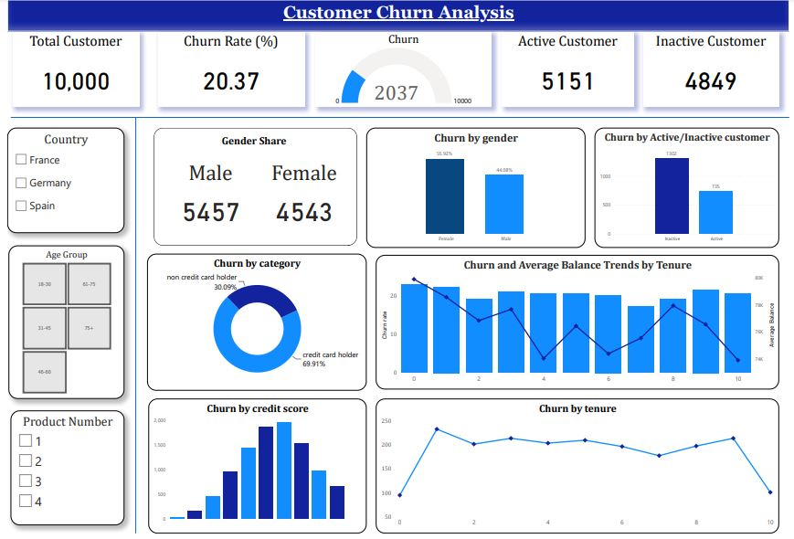
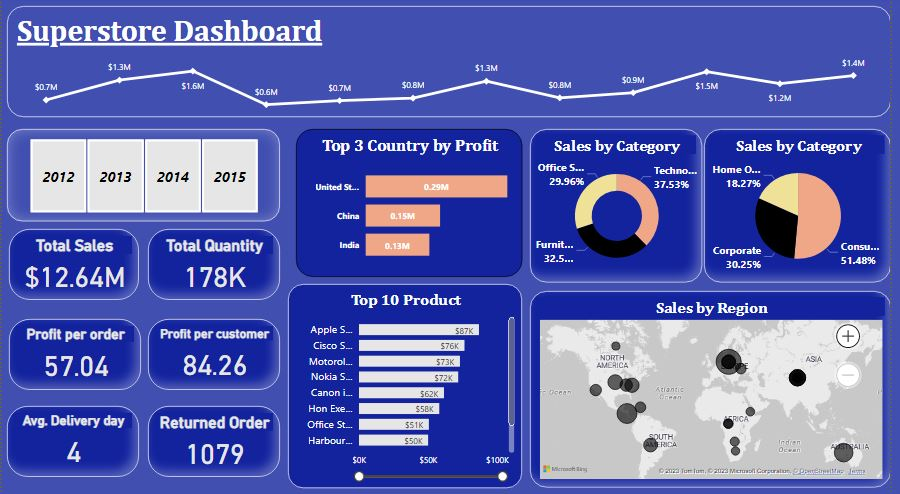

Dashboards
Customer Churn Analysis
The customer churn dashboard provides an overview of the key factors that contribute to customer churn, helping stakeholders to gain insights into customer behavior and develop targeted retention strategies.

Superstore Sales Analysis
The Superstore sales dashboard provides an overview of sales performance across different categories and regions. The dashboard typically includes visualizations of key metrics such as sales revenue, profit, and margin, allowing stakeholders to gain insights into sales trends and identify areas for improvement.
